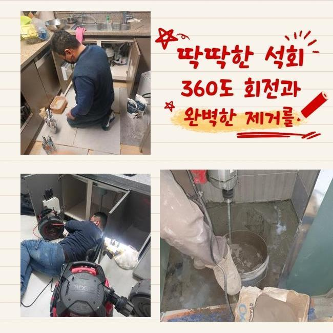
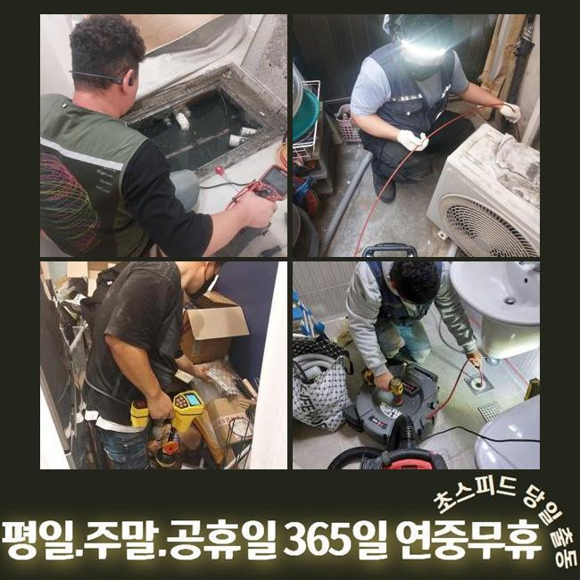
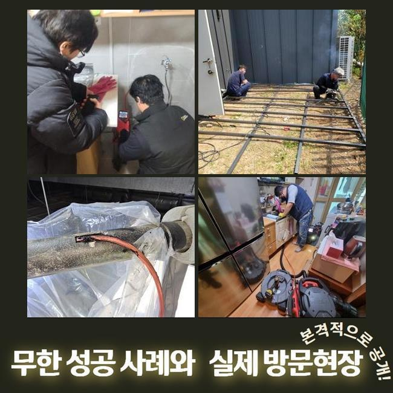
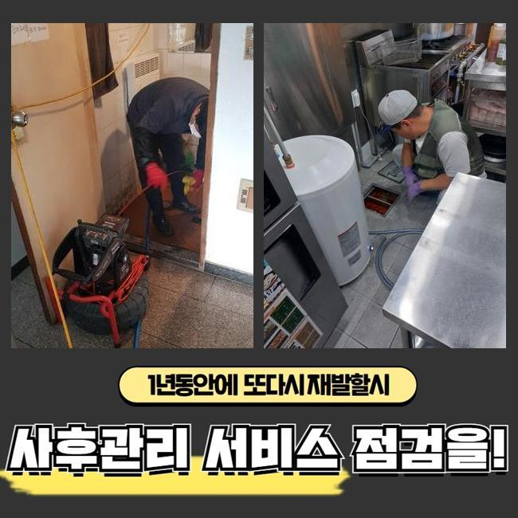
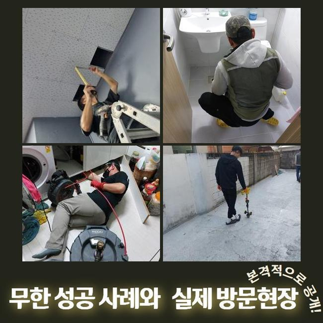
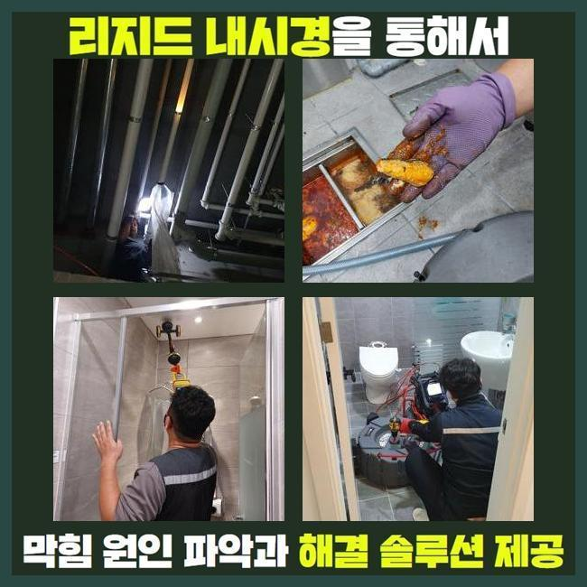
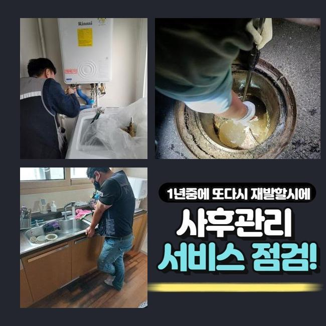

🏠 성남 서현동싱크대배수관막힘 구미동 하수구뚫어주는업체 배관막힘
성남 싱크대막힘 전문 시공 후기

📋 작업 개요
- 위치: 성남
- 서비스 유형: 싱크대막힘, 하수구막힘, 배관막힘, 누수수리, 역류해결, 뚫는업체, 설비공사
- 작업 일시: 2024. 12. 21. 19:21
- 업체명: 하수구수사대 (010-5615-2118)
🔍 문제 상황
성남 서현동싱크대배수관막힘 구미동 하수구뚫어주는업체 배관막힘
욕실공간이나 싱크대는 일상에서 필수적인 곳인데요
따라서 이용하시다가 급작스레 배수문제에 부닥친다면 고충은 말로다 형언하기 어려울겁니다
그러나 물내림이 원활하지 않은 사태를 방치하고 무시하는 경우가 많은 편이죠
얼마간의 기간이 지나면 사태가 완화되거나 심각한 문제로 전이되지는 않을거라 생각하기 때문이에요
하지만 실제는 그런식으로 흘러가지 않아요
이를 초창기에 적합하게 처리한다면 고약한 정황을 막을수 있죠
배수기능이 저하되었다는건 가지배관이나 공용관로에서 하수 배출을 막아세우는 찌꺼기가 있단 소리죠
오물이 그위에 적체되어 더욱더 고약한 장애로 발달하기전 전문업체에 의뢰하여 점검을 똑바로 수행한뒤 체계적으로 뚫어야 하겠죠
그저께 해결한 장소를 신밀하게 말씀드리고자 하는데요
비슷한 증상으로 전문가를 찾으시는 이웃님들께 도움되기를 간절히 원합니다
저희측이 방문한 장소는 꼬마빌딩에 소재한 식당입니다
의뢰인께서는 화장실과 주방시설에 이르기까지 점진적으로 물흐름이 멈췄다고 말하셨죠

🔎 원인 분석
💡 전문가 진단: 정밀 진단 장비를 사용하여 슬러지의 고착 여부를 판명하고 타격/세척 작업을 실시했습니다.
전적으로 고장나버린건 아니었고 얼마지나면 소멸되었기에 추후 정비하자는 마음으로 지속해서 쓰셨다고 합니다
그래서 결국에는 막힘이 심화되어서 배수가 멈추었고 물이 역류되는 사태까지 동반된 것이랍니다
하수관은 상당히 길고 좁다란 통로로 만들어져 있답니다
그러하기에 겉에서 보아서는 침전물이 얼마큼 존재하는지 알수가 없습니다
그러므로 공사현장으로 출발할때는 내시경기기를 필히 갖추어야 한답니다
내시경기기의 끝단에는 소형방수카메라가 달려있어요
이것으로 파악이 힘겨운 관로 내측까지 자세하게 간파할수가 있는것이고 잔재들의 종류까지 파악할수 있는거죠
내시경기기로 관찰한 관로 내측은 엄청나게 더러웠는데요
머리카락 등과 여러가지의 노폐물들이 적체되어 있었어요
그러한 찌꺼기들이 들러붙어 돌처럼 굳은 상황이어서 비좁은 배관 길목을 막아서 물빠짐이 올바로 안되었답니다
이대로 놔둔다면 크기를 더욱더 키워가며 관로에 하중을 가할수 있죠
그렇다면 더욱더 형편이 악화하는 것이기 때문에 재재신속하게 고쳐야 했죠
해당 사태에 쓰는 기기는 플렉스샤프트 체인입니다

🔧 작업 과정
비좁은 틈도 쉽게 투입가능한 장점이 있습니다
노즐끝엔 체인노커가 붙어있어 빠르게 회전하며 하수관내에 잔류하는 견고해진 여러 노폐물들을 파쇄하여 줍니다
이어서 샤프트 분쇄작업을 시행하였는데요
전동장비와 체인노커를 연결한뒤 플렉스샤프트를 작동시켜서 벽면에 붙은 찌꺼기들을 소제하기 시작했죠
어떤곳에 노폐물이 산재해있는지 확인해야 됐기에 내시경cctv를 통한 검사도 동시진행 했죠
이것으로 누적량이 많은곳을 중심으로 작업한다면 한층 조속히 끝낼수가 있죠
하수관의 내측이 훼손되지않게 조심하며 이물질만 정확히 조준하여 분쇄를 해나갔죠
만약에 시공하는 도중 관로에 무리한 힘을 주면 크랙이 일어나 누수증상이 생길수도 있답니다
그러하기에 내시경cctv나 분쇄기기가 준비되어야 하는것도 중요하지만 담당자의 테크닉도 필수적으로 따져봐야하는 부분이겠죠
이물들이 집중된 구역을 청결하게 소제한뒤에 미세한 성분이라도 남지 않도록 처리하였답니다
그후 즉각 테스트를 해보았죠
수돗물을 양동이에 담아 단박에 관로로 투입시켰고 정체하거나 역류증세는 없나 점검하였어요
신속하게 소멸되는걸 검증한후 바로 인접한 배수시설로 이동하게 되었죠
이쯤하고 마감한다면 즉시 쓰시기엔 괜찮겠으나 나중에 정체가 생겨날 가망성이 있어서였답니다
화장실의 관로와 이어진 횡주관도 조사하여 막힘의 이유를 체크하기로 했어요
화장실의 배관에서 정체가 나타나면 이어진 횡주관까지 이물들이 누증되었을 가망이 커서 전반적 배수관 정비를 실시하는게 마땅해요
그래서 횡주관에 접근하여 조사를 철저히 이행했고 저희 예상대로 관벽에 달라붙은 노폐물들을 발견할수 있었답니다
개별배관부터 메인관로에 이르기까지 점차적으로 샤프트장비를 이용하여 정비하였고 이물질이 사라진 깨끗한 관 내부를 목견하게 되었네요
물티슈를 비롯한 물에 안녹는 물질들은 욕실을 이용하시면서 다시 쌓일 수 있죠
그러하기에 일년에 한두번은 배관업체를 불러서 관리해 나가시는게 좋아요
그리고 오래도록 배수기능을 유지관리하는 요령도 저희들의 지식선에서 친절히 안내드렸답니다


✅ 작업 완료
관로에 이상이 생긴다면 일상에 큰 불편을 겪게 되므로 해당 사태까지 커지지 않게 섬세하게 방예를 하는게 좋답니다
빨간날에도 출장가능하다는 부분도 말씀드렸답니다
오래된 주거지에선 누수현상도 자주 나타나기에 이에 대한 수선의뢰도 많아요
이에 즉각 뚫음뿐만 아니라 누설수리도 시행한다는걸 안내해 드렸어요
어떤구간에서 막힘이 생겨났고 언제부터 그랬는지 간략하게 전달해주시면 더욱더 효율적으로 안내드릴수 있어요
그후 말씀해주신 시각에 배관기술자가 전용기구들을 소지한채 출동하고 있사오니 부담없이 전화주시길 당부드립니다




⚠️ 베란다 누수 및 방수 관리 방법
- ✅ 비가 많이 올 때 창틀 주변이나 아래층 천장에 얼룩이 생기는지 정기적으로 확인해 보세요.
- ✅ 우수관 주변 실리콘 마감이 들뜨거나 깨진 틈새가 있는지 손상 여부를 수시로 체크하세요.
- ✅ 베란다 바닥 타일의 줄눈(메지)이 소실되면 그 틈으로 물이 침투하여 누수가 유발됩니다.
- ✅ 누수 의심 증상 발견 시 방치하면 아래층 손실이 커지므로 즉시 전문가의 진단을 받으십시오.
💡 핵심 정리
- 확실한 장비 작업(내시경 점검 및 샤프트 스케일링)으로 원인을 뿌리 뽑습니다.
- 작업 후 1년 이내에 동일한 부위 재발 시 100% 무상 A/S 서비스를 보장합니다.
- 서울 · 경기 · 인천 전 지역에 24시간 언제든 긴급 출동할 수 있도록 항시 대기 중입니다.
❓ 자주 묻는 질문 (FAQ)
🚨 성남 싱크대막힘 문제로 고민이신가요?
정확한 원인 진단과 확실한 시공으로 재발 없는 해결을 약속드립니다.
24시간 긴급 출동 | 서울 · 경기 · 인천 전지역 | 1년 내 재발 시 무상 A/S